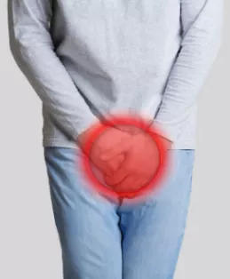
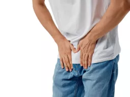
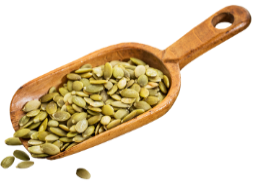
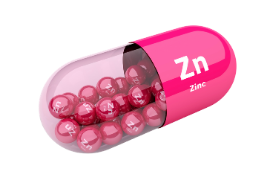

Choroby prostaty same nie mijają, ale teraz to Ty możesz ominąć je! Sprawdź, dlaczego działanie jest tak szybkie i skuteczne!
Witaj,
Nazywam się Maciej Bednarski i jestem specjalistą do spraw zapobiegania schorzeniom układu moczowo-płciowego. Ostatnie 7 lat życia spędziłem na jednym z londyńskich Uniwersytetów gdze wraz z resztą polsko-angielskiego zespołu intensywnie pracowaliśmy nad stworzeniem formuły, która byłaby pomocna w zapobieganiu i łagodzeniu dolegliwości prostaty, a także częstomoczu i impotencji. Zastanawiasz się zapewne, dlaczego nasze badania trwały aż tak długo.
Cóż, poprzeczkę postawiliśmy sobie naprawdę wysoko.
Postanowiliśmy również, że nie przerwiemy prac do momentu, aż stworzymy coś naprawdę skutecznego. Coś, czego przed nami nie stworzył nikt inny. I w końcu - coś, co będzie wolne od tzw. chemii, a oparte przede wszystkim na naturalnych składnikach. Efekty metody, o której przeczytasz za moment, przeszły nasze najśmielsze oczekiwania. Mamy nadzieję, że przekonają również Ciebie!
Ta rewolucyjna metoda, stworzona przez zespół polskich i angielskich specjalistów może pomóc Ci:
złagodzić dolegliwości wystepujące przy problemach z prostatą
przynieść ulgę przy problemach związanych z częstomoczem
pozytywnie wpłynąć na stan prostaty
To co szczególnie wyróżnia tę metodę to:
- jest bezpieczna i oparta przede wszystkim na naturalnych składnikach
- działa kompleksowo i wzmacniająco
- działa na mężczyzn w każdym wieku
- skorzystało z niej już 6 tysięcy Polaków i ponad 18 tysięcy obywateli Wielkiej Brytanii
Najważniejsza rzecz jaką chcę Ci przekazać
Być może jesteś przekonany, że problemy z prostatą Ciebie akurat nie dotyczą, jako że nie jesteś jeszcze osobą w starszym wieku. Niestety to nieprawda - wieloletnie badania dowiodły, że problemy te mogą pojawić się również u młodych, a nawet bardzo młodych mężczyzn. Owszem, z wiekiem ryzyko ich wystąpienia rośnie, ale postawię sprawę jasno: jeśli mowa o schorzeniach prostaty, żaden mężczyzna nie może czuć się całkowicie bezpieczny. Niezależnie od tego, ile ma lat.
Po czym poznać, że Twoja prostata nie funkcjonuje prawidłowo? Oto najczęstsze objawy towarzyszących jej schorzeń:

- problemy z rozpoczęciem czynności oddawania moczu
- wstawanie w nocy do toalety
- słaby, często przerywany strumień moczu
- ból w pachwinach
- mrowienie lub uczucie ucisku w kroczu
- uczucie niepełnego opróżnienia pęcherza
- epizody wyciekania moczu
- zmniejszenie pożądania seksualnego
- problemy z erekcją, osłabienie
Jeśli przekroczyłeś 50-ty rok życia, istnieje duża szansa, że doświadczyłeś już części z wymienionych wyżej objawów. Jeśli z kolei jesteś młodszy, to warto zawczasu im zapobiec!
Nie udawaj bohatera!
Tak, wiem - w przypadku prostaty przeczekanie problemów może wydawać Ci się kuszące. Tyle że te problemy nie same nie przejdą. Przejść może przeziębienie, ból barku albo migrena, ale nie schorzenia związane z prostatą. Nie udawaj bohatera i weź sprawy w swoje ręce!
To samo tyczy się Twoich bliskich. Pokolenie naszych ojców i dziadków to często prawdziwi twardziele, ale choroba nie świadczy o słabości. I warto, byś im to uświadomił, chociażby wspominając o opracowanej przez nas metodzie.
W tym miejscu pozwolę sobie na trochę prywaty, ale tylko po to, by w tym co mówię nie być gołosłownym. Mój ojciec… W młodości sportowiec… Całe dorosłe życie ciężko pracujący hutnik… Na emeryturze dziarski staruszek, jak ognia unikający wizyt u specjalistów…
I męczący się po cichu z własną prostatą…
Tak, w dużej mierze to właśnie mój ojciec przyczynił się do tego, że postanowiłem rozpocząć prace nad naprawdę skuteczną formułą na jego schorzenie. Co więcej, przyczynili się do tego również ojcowie i dziadkowie moich kolegów z zespołu.
Mężczyźni, którzy nie chcieli robić z siebie “mazgai”.
Mężczyźni, którzy postanowili przeczekać chorobę.
I niestety, w niektórych przypadkach również mężczyźni, którzy przez niewielkie z początku problemy z prostatą doprowadzili ostatecznie do bardzo poważnych dolegliwości w jej obrębie. Z nowotworami włącznie…
Dlaczego mężczyźni nie chcą leczyć schorzeń prostaty?
Powodów takiego stanu rzeczy jest bardzo wiele, ale do najczęstszych należą trzy:
1. WSTYD
2. OBAWA PRZED WYNIKAMI BADAŃ
3. KOSZTY
Jest jeszcze czwarty powód- nieświadomość. Być może Ty również nie zdajesz sobie sprawy, do jakich komplikacji prowadzić może zaniedbanie problemów z prostatą. Impotencja, nietrzymanie moczu i bardzo niebezpieczne zatrzymanie moczu - to wszystko to ledwie wierzchołek góry lodowej...
Zastanawiasz się, dlaczego to właśnie formuła może być najlepszym i najbardziej skutecznym rozwiązaniem ?
Pracując nad składem od początku wiedzieliśmy, czego chcemy. Zależało nam na stworzeniu formuły, która będzie wspierała utrzymanie zdrowej prostaty z ogromną siłą, a jednocześnie nie sprawi, że przysłowiowym rykoszetem oberwą inne części organizmu.
Postanowiliśmy, że nasza metoda musi działać podobnie jak laser
- Precyzyjnie trafiać w istotne miejsca, a te pozostałe po prostu omijać.
- Wiedzieliśmy, że wiele metod nie działa w taki sposób.
- Że pomagają, ale jednocześnie mogą zaszkodzić.
- Zdecydowaliśmy, że zrobimy wszystko, by nasza metoda była inna.
- W 100% bezpieczna
Udało się!
rzeczywiście działa niczym laser. Z ogromną precyzją dociera do źródła dolegliwości i bardzo szybko rozpoczyna proces naprawczy. Na inne części organizmu również wpływa, jednak wyłącznie pozytywnie - poprawia ich funkcjonowanie.
Od początku prac nad stworzeniem tej kuracji zakładaliśmy, że musi być ona oparta przede wszystkim na naturalnych składnikach. Poszukiwanie tych najlepszych i najlepiej przez organizm przyswajalnych zajęło nam ponad 4 lata. Kolejne trzy spędziliśmy na ustaleniu ich optymalnych proporcji, bo to właśnie one są sprawą kluczową. Tak właśnie powstała formuła .
Skład formuły
Ekstrakt boczni Ekstrakt z pestek Ekstrakt z pokrzywy Cynk piłkowanej dyni zwyczajnej ( glukonian)
to wyjątkowo bezpieczna formuła, którą możesz stosować tak długo jak przewiduje kuracja, albo - w razie potrzeby - dłużej. Jej działanie możesz odczuć już po kilku dniach.
Możesz całkowicie zapomnieć o krępujących dolegliwościach !
Mój tata już kilka miesięcy temu przekonał się, że opracowana przeze mnie i moich kolegów-naukowców metoda działa. Oczywiście - na początku wzbraniał się przed przyjmowaniem kapsułek, ale po kilku dniach odczuł ich cudowne działanie i sam poprosił mnie, bym przywiózł mu kolejne opakowanie. Odzyskał zdrowie, ale też odzyskał dawnego siebie. Wcześniej problemy z prostatą nie pozwalały mu w pełni cieszyć się życiem. Teraz czuje się świetnie, jest pogodny i znów sypie anegdotami jak z rękawa.
Kuracja z pomogła nie tylko mojemu ojcu, ale też kilku tysiącom innych Polaków !
Teraz także i Ty możesz skorzystać z jej cudownego działania. Nie pozwól, by problemy z prostatą odbierały Ci radość życia. Nie daj sobie wmówić, że w pewnym wieku są one czymś normalnym. Nie wierz tym, którzy zapewniają Cię, że to schorzenie samo minie.
" Wreszcie nie muszę chodzić co 5 minut do toalety "
'' Nie sądziłem, że problemy z prostatą mogą być aż tak uciążliwe, dla mnie najgorsza była ciągła potrzeba chodzenia do toalety. Rodzina zauważyła, że jestem trochę przygnębiony. Przyjaciółka żony poleciła Nam , jej mąż stosował i bardzo mu pomógł. Cieszę się, że i ja spróbowałem. W końcu mogłem się wyspać i nie zaglądałem tak czesto do toalety."
Zamiast tego:
- Skorzystaj z naprawdę skutecznej metody!
- Szybko pozbądź się dokuczliwych objawów!
- Popraw funkcjonowanie całego organizmu!
- Zapomnij o problemach z częstomoczem!
- Odzyskaj pełną sprawność seksualną!
JEGO SKUTECZNOŚĆ TO 97%
Do tej pory nie możliwe było żeby w tak krótkim czasie złagodzić dolegliwości ze strony prostaty. Nikt nie wierzył, że można stworzyć naturalną, roślinną formułę, która w pozytywny sposób oddziałuje na układ moczowy. Jak się okazuje bogactwo natury jest niedocenione. Nie musisz już dłużej męczyć się podczas wizyty w toalecie, czy krępować się podczas intymnych zbliżeń. Zaufaj formule , która może pomóc Ci odzyskać dawnego siebie.
JEST W 100 % ZDROWY I BEZPIECZNY W STOSOWANIU- POTWIERDZONE TESTAMI I BADANIAMI
Suplement diety produkowany jest w zakładzie opartym o najwyższe światowe standardy jakości oraz standardy higieny i standardy dobrej produkcji.
Jakość i skład sprawdzany jest przez grupę technologów. Dzięki temu możemy mieć pewność, że zawiera on wysokie stężenie aktywnych składników roślinnych, które wspierają prostatę.
Dlaczego z proponowanej przeze mnie metody skorzystać powinieneś już dziś?
Bo tylko dzisiaj możesz nabyć z ogromnym upustem! Normalna cena kapsułek nie jest wysoka, jednak otrzymaliśmy całe mnóstwo listów z prośbą o jej czasowe obniżenie. Niestety - liczba tańszych opakowań jest bardzo ograniczona i nie możemy dać Ci gwarancji, że zdążysz skorzystać z tej wyjątkowej promocji. Nie czekaj - przecież chodzi tu o Twoje zdrowie i dobre samopoczucie!
30 dniowa Gwarancja Satysfakcji. Nic ne ryzykujesz !
Moja metoda działa co potwierdzają efekty mojego taty i tysiąca innych osób, które z niej skorzystały, dlatego nie boję się dać Ci takiej gwarancji. Jeżeli w tym czasie produkt nie spełni Twoich oczekiwań, zwrócę Ci pieniądze, bez pytań, bez problemów. Zdaję sobie sprawę, że ktoś może być nieuczciwy i nadużyć moją gwarancję, ale myślę, że jak w końcu poczuje się dobrze jako mężczyzna, to nie będzie miał ku temu powodów.
W JEDNORAZOWYM RABACIE KOSZTUJE
Niestety - liczba tańszych opakowań jest bardzo ograniczona i nie możemy dać Ci gwarancji, że zdążysz skorzystać z tej wyjątkowej promocji. Dlatego już teraz wypełnij poniższy formularz i odbierz opakowanie w niższej cenie.
Choroby prostaty same nie mijają, ale teraz to Ty możesz ominąć je!
Sprawdź, dlaczego działanie jest tak szybkie i skuteczne
Witaj,
Nazywam się Maciej Bednarski i jestem specjalistą do spraw zapobiegania schorzeniom układu moczowo-płciowego. Ostatnie 7 lat życia spędziłem na jednym z londyńskich Uniwersytetów gdze wraz z resztą polsko-angielskiego zespołu intensywnie pracowaliśmy nad stworzeniem formuły, która byłaby pomocna w zapobieganiu i łagodzeniu dolegliwości prostaty, a także częstomoczu i impotencji.
> BADANIA NAD TĄ FORMUŁĄ TRWAŁY AŻ 7 LAT, DLACZEGO TAK DŁUGO?
Cóż, poprzeczkę postawiliśmy sobie naprawdę wysoko.
Postanowiliśmy również, że nie przerwiemy prac do momentu, aż stworzymy coś naprawdę skutecznego. Coś, czego przed nami nie stworzył nikt inny. I w końcu - coś, co będzie wolne od tzw. chemii, a oparte przede wszystkim na naturalnych składnikach.
EFEKTY METODY, O KTÓREJ PRZECZYTASZ JUŻ ZA MOMENT, PRZESZŁY NASZE NAJŚMIELSZE OCZEKIWANIA.
> ZANIM PRZEJDZIESZ DALEJ ZOBACZ JAK MOŻE CI POMÓC TA REWOLUCYJNA METODA:
- złagodzić dolegliwości wystepujące przy problemach z prostatą
- przynieść ulgę przy problemach związanych z częstomoczem
- przynieść ulgę przy problemach związanych z częstomoczem i pozytywnie wpłynąć na stan prostaty
Teraz masz szansę wrócić do dawnego, lepszego życia. Pamiętaj jeśli zauważyłeś jakieś niepokojące objawy warto zawczasu im zapobiec. Nie udawaj bohatera i weź sprawy w swoje ręce. I nie chodzi wcale o jakieś specyfiki, a o
W PEŁNI ZDROWA I NATURALNA FORMUŁA UROSTOM
> NAJWAŻNIEJSZA RZECZ JAKĄ CHCE CI PRZEKAZAĆ
Być może jesteś przekonany, że problemy z prostatą Ciebie akurat nie dotyczą, jako że nie jesteś jeszcze osobą w starszym wieku. Niestety to nie do końca prawda - wieloletnie badania dowiodły, że problemy te mogą pojawić się również u młodych, a nawet bardzo młodych mężczyzn. Owszem, z wiekiem ryzyko ich wystąpienia rośnie, ale żaden mężczyzna nie może czuć się całkowicie bezpieczny.
jest odpowiedni dla mężczyzn w każdym wieku.
> CO WYRÓŻNIA SPOŚRÓD INNYCH METOD ?
100% NATURALNY
składa się z naturalnych składników roślinnych, które wspierają prostatę oraz prawidłową pracę jąder. Dodatkowo mogą ograniczać wchłanianie się cholesterolu.

BEZ KONSERWANTÓW
Brak sztucznych wypełniaczy i konserwantów
BEZPIECZNY
został dokładnie przebadany pod kątem bezpieczeństwa i zatwierdzony przez Główny Inspektorat Sanitarny.
ŁAGODZI OBJAWY
Składniki aktywne zawarte w oraz regularne stosowanie może pomóc w załagodzeniu objawów przerostu prostaty.
> NIE LEKCEWAŻ PIERWSZYCH OBJAWÓW PROBLEMÓW Z PROSTATĄ
- problemy z rozpoczęciem czynności oddawania moczu
- wstawanie w nocy do toalety
- słaby, często przerywany strumień moczu
- ból w pachwinach, mrowienie lub uczucie ucisku w kroczu
- epizody wyciekania moczu
- zmniejszenie pożądania seksualnego
- problemy z erekcją, osłabienie
Tak, wiem - w przypadku prostaty przeczekanie problemów może wydawać Ci się kuszące. Tyle że te problemy same nie przejdą. Przejść może przeziębienie albo migrena, ale nie schorzenia związane z prostatą. Nie udawaj bohatera i weź sprawy w swoje ręce!

> DLACZEGO MĘŻCZYŹNI NIE CHCĄ LECZYĆ SCHORZEŃ PROSTATY ?
Powodów takiego stanu rzeczy jest bardzo wiele, ale do najczęstszych należą trzy:
1. WSTYD
2. OBAWA PRZED WYNIKAMI BADAŃ
3. KOSZTY
Jest jeszcze czwarty powód- NIEŚWIADOMOŚĆ. Być może Ty również nie zdajesz sobie sprawy, do jakich komplikacji prowadzić może zaniedbanie problemów z prostatą. Impotencja, nietrzymanie moczu i bardzo niebezpieczne zatrzymanie moczu - to wszystko to ledwie wierzchołek góry lodowej...
> - CO WPŁYWA NA JEGO SKUTECZNOŚĆ ?
Od początku prac nad stworzeniem tej metody zakładaliśmy, że musi być ona oparta przede wszystkim na naturalnych składnikach. Poszukiwanie tych najlepszych i najlepiej przez organizm przyswajalnych zajęło nam ponad 4 lata. Kolejne trzy spędziliśmy na ustaleniu ich optymalnych proporcji, bo to właśnie one są sprawą kluczową. Tak właśnie powstała formuła .
Składniki roślinne, których działanie potwierdzono badaniami:
Ekstrakt z boczni piłkowanej
Wyciąg z owoców boczni piłkowanej wykazuje działanie antyandrogenne. Składniki wyciągu łagodzą dolegliwości związane z łagodnym rozrsotem gruczołu krokowego. Konsekwencją stosowania może być złagodzenie takich objawów jak parcie na mocz i częste oddawanie moczu.

Ekstrakt z pestek dyni
Ekstrakt ten jest wytwarzany w wyniku suszenia pestek dyni. Tradycyjnie ekstrakt ten był używany do leczenia wielu chorób przez dawne ludy Ameryki, min. zapalenie pęcherza czy oczyszczanie organizmu. Istnieją badania, które dowodzą, że ekstrakt ten stymuluje u mężczyzn produkcję hormonów rewitalizując stan prostaty.
Ekstrakt z pokrzywy zwyczajnej
Składniki zawarte w pokrzywie
mogą korzystnie wpływać na stan prostaty ograniczając jej nadmierny rozrost. Ekstrakt z pokrzywy zwyczajnej
wykazuje właściwości obniżające stężenie cukru we krwi, moczopędne i przeciwzapalne. Wiele osób stosuje pokrzywę
w celach detoksykacyjnych i regulujących ciśnienie krwi.

Cynk (glukonian )
Glukonian cynku ma szczególne
znaczenie dla męskiej płodności gdyż pomaga w utrzymaniu odpowiedniego stężenia testosteronu. Ponadto wspiera
prawidłową pracę układu odpornościowego, pomaga Nam utrzymać właściwy tan włosów, skóry i
paznokci.
> FORMUŁA POMOGŁA JUŻ KILKU TYSIĄCOM POLAKÓW
to wyjątkowo bezpieczna formuła, którą możesz brać tak długo jak przewiduje to kuracja , albo - w razie potrzeby - dłużej. Jej działanie możesz odczuć już po kilku dniach.
Teraz także i Ty możesz skorzystać z ich cudownego działania. Nie pozwól, by problemy z prostatą odbierały Ci radość życia. Nie daj sobie wmówić, że w pewnym wieku są one czymś normalnym. Nie wierz tym, którzy zapewniają Cię, że to schorzenie samo minie.
" Wreszcie nie muszę chodzić co 5 minut do toalety "
'' Nie sądziłem, że problemy z prostatą mogą być aż tak uciążliwe, dla mnie najgorsza była ciągła potrzeba chodzenia do toalety. Rodzina zauważyła, że jestem trochę przygnębiony. Przyjaciółka żony poleciła Nam , jej mąż stosował i bardzo mu pomógł. Cieszę się, że i ja spróbowałem. W końcu mogłem się wyspać i nie zaglądałem tak czesto do toalety."
> STOSUJĄC WRESZCIE MOŻESZ UWOLNIĆ SIĘ OD NIEPRZYJEMNYCH OBJAWÓW
działa niczym laser. Z ogromną precyzją dociera do źródła dolegliwości i bardzo szybko rozpoczyna proces naprawczy. Na inne części organizmu również wpływa, jednak wyłącznie pozytywnie - poprawiając ich funkcjonowanie.
Pracując nad składem od początku wiedzieliśmy, czego chcemy. Zależało nam na stworzeniu formuły, która będzie wspierała utrzymanie zdrowej prostaty z ogromną siłą, a przy tym będzie bezpieczna dla organizmu.
> DLACZEGO ZYSKAŁ TAK DUŻĄ POPULARNOŚĆ ?
JEGO SKUTECZNOŚĆ TO 94,7%
Do tej pory nie możliwe było żeby w tak krótkim czasie złagodzić dolegliwości ze strony prostaty. Nikt nie wierzył, że można stworzyć naturalną, roślinną formułę, która w pozytywny sposób oddziałuje na układ moczowy. Jak się okazuje bogactwo natury jest niedocenione. Nie musisz już dłużej męczyć się podczas wizyty w toalecie, czy krępować się podczas intymnych zbliżeń. Zaufaj formule , która może pomóc Ci odzyskać dawnego siebie.
JEST ZDROWY I BEZPIECZNY W STOSOWANIU- POTWIERDZONE TESTAMI I BADANIAMI
Suplement diety produkowany jest w zakładzie opartym o najwyższe światowe standardy jakości oraz standardy higieny i standardy dobrej produkcji.
Jakość i skład sprawdzany jest przez grupę technologów. Dzięki temu możemy mieć pewność, że zawiera on wysokie stężenie aktywnych składników roślinnych, które wspierają prostatę.
> DLACZEGO WARTO ABYŚ JUŻ DZIŚ SKORZYSTAŁ Z TEJ METODY ?
Bo tylko dzisiaj możesz nabyć z ogromnym upustem! Normalna cena kapsułek nie jest wysoka, jednak otrzymaliśmy całe mnóstwo listów z prośbą o jej czasowe obniżenie. Niestety - liczba tańszych opakowań jest bardzo ograniczona i nie możemy dać Ci gwarancji, że zdążysz skorzystać z tej wyjątkowej promocji. Nie czekaj - przecież chodzi tu o Twoje zdrowie i dobre samopoczucie!
> 30 DNIOWA GWARANCJA SATYSFAKCJI- NIC NIE RYZYKUJESZ !
Moja metoda działa co potwierdzają efekty mojego taty i tysiąca innych osób, które z niej skorzystały, dlatego nie boję się dać Ci takiej gwarancji. Jeżeli w tym czasie produkt nie spełni Twoich oczekiwań, zwrócę Ci pieniądze, bez pytań, bez problemów. Zdaję sobie sprawę, że ktoś może być nieuczciwy i nadużyć moją gwarancję, ale myślę, że jak w końcu poczuje się dobrze jako mężczyzna, to nie będzie miał ku temu powodów.
> DECYZJA NALEŻY DO CIEBIE. CHCESZ POZBYĆ SIĘ KRĘPUJĄCYCH PROBLEMÓW ?
Wystarczy, że wypełnisz poniższy formularz, wybierzesz wygodny dla siebie sposób płatności i już za 2,3 dni zaczniesz bezpieczną kurację. O nic nie musisz się martwić, po złożeniu zamówienia na nasz specjalista skontaktuje się z Tobą i udzieli Ci wszelkich wskazówek i informacji.
W JEDNORAZOWYM RABACIE KOSZTUJE
Niestety - liczba tańszych opakowań jest bardzo ograniczona i nie możemy dać Ci gwarancji, że zdążysz skorzystać z tej wyjątkowej promocji. Dlatego już teraz wypełnij poniższy formularz i odbierz opakowanie w niższej cenie.